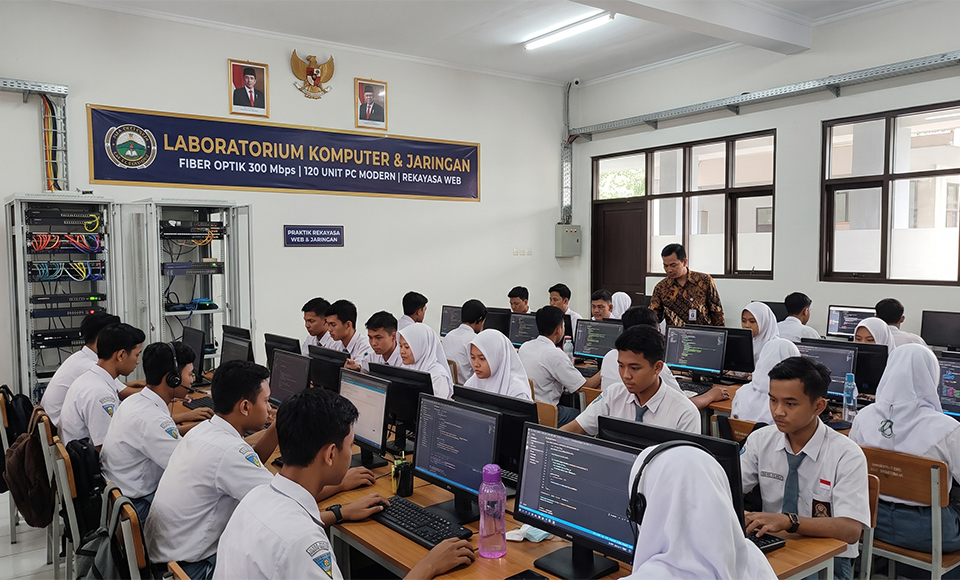
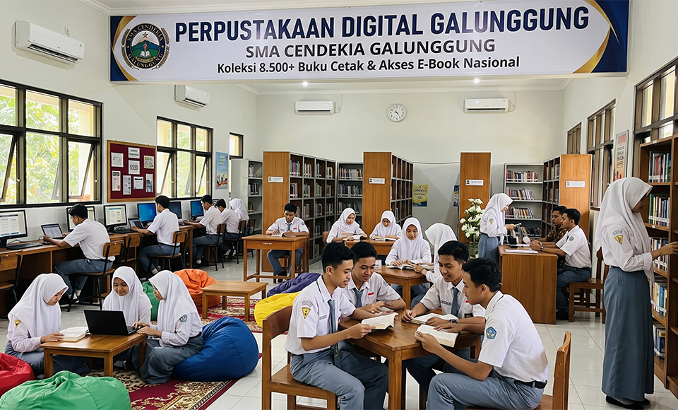
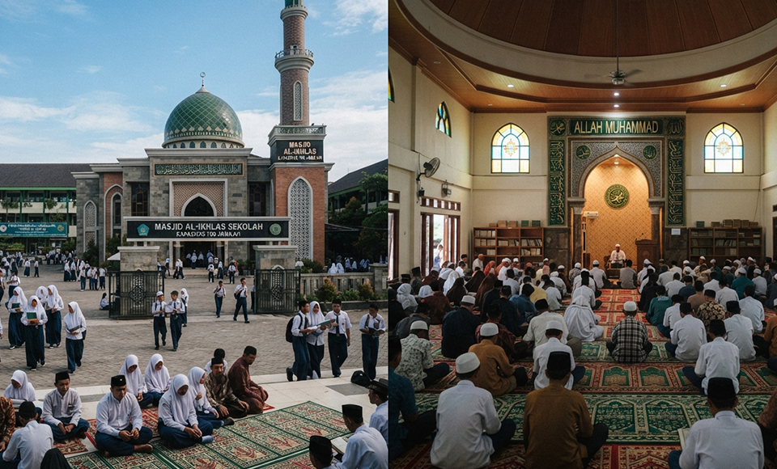
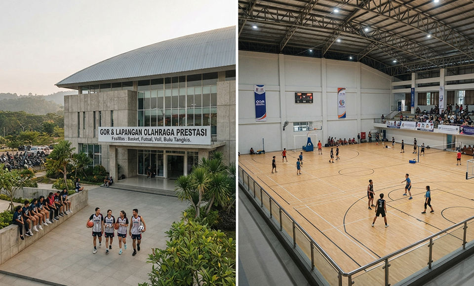
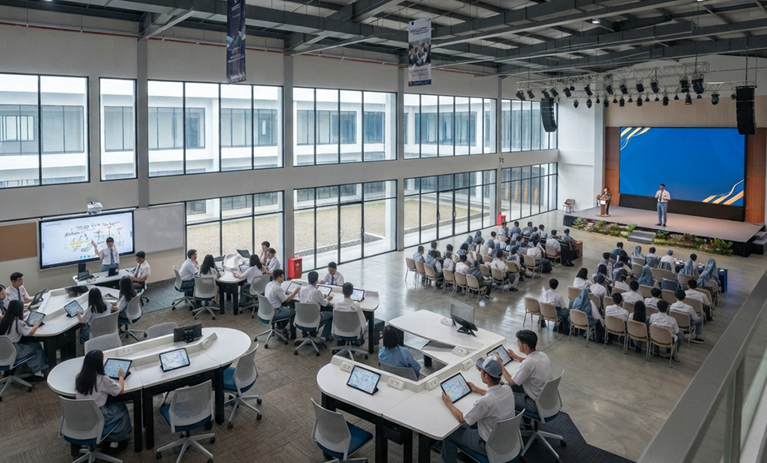

SMA Cendekia Galunggung Tasikmalaya didirikan pada tahun 2004 oleh Yayasan Pendidikan Galunggung Mandiri atas prakarsa para tokoh pendidik di Priangan Timur. Berlokasi strategis di Jalan Siliwangi, Kecamatan Tawang, Kota Tasikmalaya, sekolah ini hadir menjawab kebutuhan pendidikan menengah yang adaptif terhadap perkembangan ilmu pengetahuan dan teknologi.
Seiring berjalannya waktu, sekolah terus bertransformasi menjadi sekolah rujukan berbasis digital dengan mempertahankan nilai-nilai religius dan kearifan lokal masyarakat Tasikmalaya.
Pada tahun 2024, SMA Cendekia Galunggung kembali mempertahankan predikat Akreditasi A (Unggul) dari Badan Akreditasi Nasional Sekolah/Madrasah (BAN-S/M).
| Identitas Resmi Satuan Pendidikan | |
|---|---|
| Nama Sekolah | SMA Cendekia Galunggung Tasikmalaya |
| NPSN | 20298412 |
| Status & Akreditasi | Swasta Unggulan — Terakreditasi A (Nilai 96) |
| Alamat | Jl. Siliwangi No. 128, Kel. Kahuripan, Kec. Tawang, Kota Tasikmalaya |
| Kurikulum | Kurikulum Merdeka Terintegrasi Literasi Digital |
| Kepala Sekolah | Moh Abdul Jalil, S.Kom. (Lulusan Teknik Informatika, Universitas Perjuangan) |
| Website & Email | www.smacendekiagalunggung.sch.id | info@smacendekiagalunggung.sch.id |
"Terwujudnya lulusan yang beriman dan bertakwa, unggul dalam prestasi akademik, cakap teknologi digital, kreatif, serta berwawasan lingkungan di Kota Tasikmalaya pada tahun 2030."
Fasilitas modern untuk mendukung kegiatan belajar mengajar, riset digital, dan pengembangan karakter siswa.

Dilengkapi 120 unit PC spesifikasi modern, jaringan fiber optik 300 Mbps, dan perangkat praktik rekayasa web.

Koleksi 8.500+ buku cetak dan akses e-book nasional dengan ruang baca ber-AC yang nyaman.

Ruang praktikum Fisika, Kimia, dan Biologi berstandar keselamatan laboratorium nasional.

Kapasitas 700 jamaah sebagai pusat pembinaan keagamaan, tahfidz Al-Qur'an, dan kajian keislaman.

Fasilitas lapangan basket, futsal, voli, dan bulu tangkis untuk mendukung kegiatan olahraga prestasi.

Setiap ruang kelas dilengkapi proyektor interaktif serta aula serbaguna sekolah berkapasitas 500 orang.